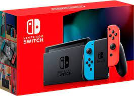

Xbox Series X
¿Por que deberias comprarla?
? Es la Xbox más poderosa disponible en estos momento, además, su servicio Game Pass es muy atractivo. ¿Para quién es? Jugadores que quieran jugar tantos títulos nuevos como sea posible con la mejor fidelidad visual. La Xbox Series X es una central de tecnología. La consola presenta 12 teraflops y hasta ocho veces más de rendimiento gráfico que la Xbox One, sin mencionar que dobla el de la Xbox One X. El poder de esta consola de nueva generación seguramente sorprenderá a los jugadores, cuando haya verdaderos juegos de nueva generación disponibles para esta. La Xbox Series X también tiene 16 GB de memoria GDDR6, además, tiene soporte para frecuencia de actualización variable (VRR), sombreado de frecuencia variable (VRS) y un modo de baja latencia que permite mejores respuestas de los juegos.
Nintendo Switch
¿Para quién es? Para todos. Nintendo ha luchado duro por mantenerse al día con Sony y Microsoft durante la última década. A pesar de su popularidad explosiva y dominante, la Wii intercambió potencia gráfica para ganar el truco de control de movimiento, y así sacó a Nintendo de la plataforma de terceros para meterla en una generación completa de hardware. La Wii U intentó cerrar la brecha, pero fracasó por falta de identidad. La última consola de Nintendo, la Switch, cambió finalmente todo eso. Nintendo eludió la carrera armamentista cambiando no el cómo tú usas tu consola, sino el dónde. La Switch es un dispositivo “híbrido” que se puede conectar perfectamente a un televisor, como la PlayStation 4 y la Xbox One, y que también funciona como un dispositivo portátil. Si bien, no tienes el poder computacional para reproducir los últimos lanzamientos de 4K y 60 FPS planeados para las consolas de última generación, la Switch puede reproducir Doom (2016) a 30 FPS sin ningún problema y en el lugar que desees, y eso es más que suficiente para muchos jugadores.